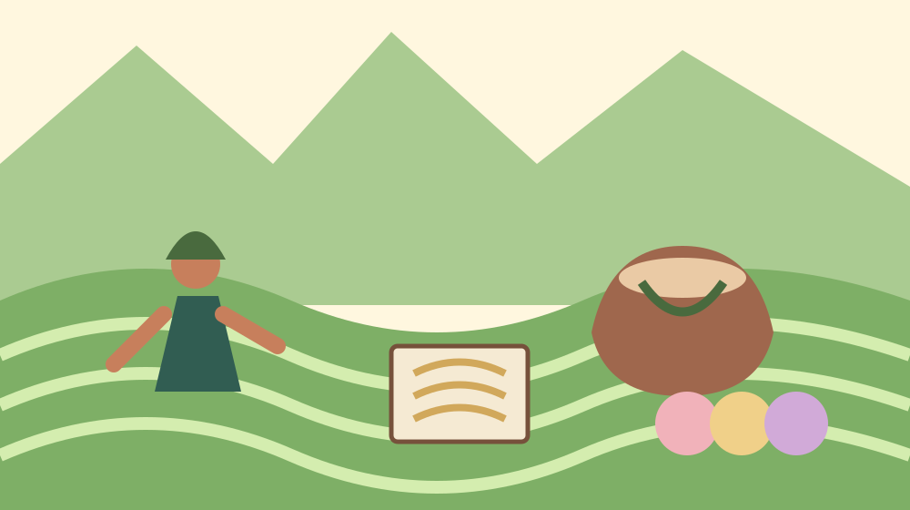
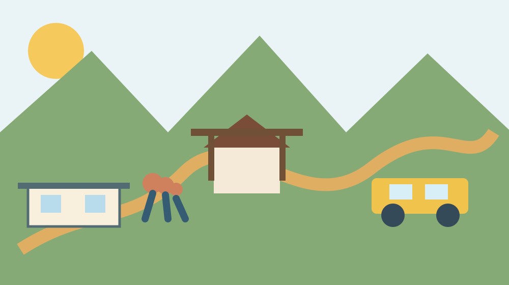

静岡県森町完全ガイド｜観光・暮らし・特産品・アクセス
森町は、一つの大きな観光施設を短時間で見る町というより、神社や寺、太田川、茶畑、町並み、祭礼、手仕事が地区ごとの暮らしと隣り合う町です。初訪問では「有名な場所を全部」ではなく、目的を一つ決め、移動に余白を持たせると土地の輪郭が見えます。
1. 最初に知る結論と、森町を回る基本単位
静岡県周智郡森町は県西部の内陸にあり、観光協会は山々、太田川、蔵のある町並み、社寺、舞楽、祭り、森山焼、和菓子、茶、農産物を「遠州の小京都」を形づくる要素として紹介しています。ただし、これらは一か所に集まっていません。森町には森、一宮、飯田、園田、天方、三倉という六つの地区があり、平地の駅周辺から山側まで移動条件が変わります。町名だけを見て近いと思い込まず、住所と地図、移動手段を一緒に確認することが第一歩です。
初めて訪れるなら、旅の中心を「小國神社と一宮」「森地区の町並みと文化」「アクティ森を含む体験」のいずれかに置くと組み立てやすくなります。小國神社は町南西部の一宮地区、森地区は役場や文化会館、遠州森駅に近い中心部、アクティ森は町北部です。三つを同じ感覚で徒歩移動できるとは考えず、車でも乗降や駐車、滞在の時間を見込みます。公共交通なら先に帰りの便を決め、そこから逆算します。
このページは店や催しを無条件に推薦する一覧ではありません。森町観光協会の施設検索は、神社・仏閣、体験・レジャー、買い物・特産品、自然・景観などの分類と六地区で絞り込めます。最新の営業状況や花の開花、催しは公式検索で確かめ、その後に自分の移動時間へ落とし込むのが安全です。古い紹介記事の「営業中」「見頃」「開催予定」をそのまま信じないことも、地域へ迷惑をかけない観光の一部です。
出発前のメモには、目的地の正式名称、住所、公式URL、到着予定、帰路、問い合わせ先を書きます。同名施設や古い案内との取り違えを防げるうえ、同行者が別行動になっても集合場所を共有できます。
2. 六地区を、観光名だけでなく移動と暮らしから見る
森地区は、遠州森駅、役場、文化会館などがある町の中心として計画を立てやすい地区です。観光協会が紹介する本町の町並みでは、秋葉街道沿いに連子格子や板張りなどの建築要素が残るとされています。ここはテーマパークの保存街ではなく、現在も人が暮らし、仕事をする場所です。玄関先や私有地へ入らず、車道をふさがず、建物の由来を外観だけで断定しない姿勢が必要です。
一宮地区は小國神社を訪れる人の大きな入口です。天竜浜名湖鉄道には遠江一宮駅がありますが、駅名と目的地が同じ地区だからといって、すべてが駅前にあるわけではありません。神社公式の交通案内、路線バス案内、当日の交通規制を確認します。初詣や紅葉など人が集中する時期は、通常日の所要時間や駐車の感覚を当てはめないことが大切です。
飯田と園田は町南部から東部側の生活圏を考えるときに欠かせません。飯田には山名神社と祭礼文化があり、園田は茶畑や集落の景観と現在の暮らしが隣り合います。祭礼は見物客のためだけに行われる催しではなく、地域の担い手が準備し、道や建物を使いながら支えています。撮影場所、通行、私有地、音への配慮を、現地の案内に従って判断します。
天方と三倉は山側の地形や道路条件を意識して訪れたい地区です。平地部と同じ速度で次の場所へ移れると決めず、狭い道、天候、日没、通信状況を確認します。歴史の道や自然を訪ねる場合も、観光名が付いていることと、どの区間も常時安全に歩けることは同じではありません。町や県の道路・河川情報を見て、現場で無理だと思ったら引き返せる時間を残します。
六地区の違いは優劣ではありません。駅に近い、車で動きやすい、社寺がある、茶畑が見える、山に近いという特徴は、訪れる目的によって意味が変わります。旅程を作るときは、地名をスタンプのように集めるのではなく、その日に知りたい問いを一つ置きます。たとえば「祭りが日常の道とどう共存するか」「茶畑の景観が農作業でどう維持されるか」と考えると、観光と暮らしを切り離さずに見られます。
3. 神社・寺・町並みを訪ねるときの読み方
小國神社、天宮神社、山名神社などの社寺は、森町の歴史を知る重要な入口です。本サイトには神社と寺院の個別データベースがあるため、所在地や基礎情報は森町の神社、森町の寺院で確認できます。観光ガイドで同じ由緒を別の言葉にして増やすのではなく、個別ページを正規の入口にし、文化財の指定や祭神、宗派は公式資料と現地掲示へ戻って確かめます。
森町には三社に伝わる舞楽があり、既存の三つの舞楽を比べる記事では、三つを一括りにしない見方を整理しています。舞楽は演目だけでなく、奉納の場、保存する人、準備、観覧者の振る舞いまで含む文化です。開催日の情報を見つけても、席や撮影が自由だと推測せず、神社や主催者の当年案内を確認します。
町並みを見るときは、古そうに見える建物をすべて文化財と呼ばないようにします。町の文化財資料、図説森町史、歴史民俗資料館などの一次資料で確かめ、分からないものは分からないまま残します。路地や軒先は生活空間です。人物が写る撮影、店舗内部、祭礼準備の撮影では、公開場所だから無条件に撮ってよいと考えず、声をかけるか撮影を控えます。
社寺と町並みの間には、秋葉街道や地域の道、川、水路、農地があります。これらを背景として消費せず、なぜ建物や集落がその位置にあるのかを考えると、森町の見え方が変わります。ただし、歴史的な道の推定経路と現在安全に歩ける道路は別です。地図、現地標識、交通量を確かめ、私有地や農作業の妨げになる近道を選びません。
4. 茶・農産物・工芸・食を、販売情報だけで終わらせない
観光協会は森のお茶、和菓子、農の恵み、森山焼などを森町の魅力として案内しています。食のページで重要なのは、「有名」「人気」という形容詞を並べることではなく、誰がどの条件で作り、どこで公式に販売を知らせ、持ち帰る人は何を確認するかです。茶なら品種や製法、淹れ方で感じ方が変わり、とうもろこしや柿などの農産物は天候と収穫で時期が動きます。
直売所や個人販売の情報は、とくに変化が大きい分野です。過去に販売した場所が今年も同じ時刻に販売するとは限りません。路上駐車や開店前の待機が近隣の負担になる場合もあります。販売者や施設の公式発表を優先し、売り切れたときに別の無人販売所を地図から探し回るのではなく、次の機会へ切り替える余裕を持ちます。
森町体験の里アクティ森について、町公式ページは創作体験工房、アウトドア体験フィールド、地場産品販売所、レストランなどを備える複合施設と説明しています。陶芸や和紙漉きなどを目的にする場合、体験内容、受付、所要時間、対象年齢、当日の空きは施設公式で確認します。観光紹介に載っていることは、予約不要や常時実施を意味しません。
お土産は「森町らしい」という一語で決めず、渡す相手、保存、持ち歩く時間、製造者表示、予算で選びます。茶畑や作業場を見たい場合は、公道から見えることと撮影・立入りの許可があることを区別します。農地は仕事の場所で、農機の通路をふさいだり、畝へ入ったりしません。食から地域を知るとは、商品を買うだけでなく、生産と生活の条件を尊重することです。

5. 車・鉄道・バスを使い分け、帰りから旅程を作る
町公式の地域公共交通資料では、天竜浜名湖鉄道が町南部を横断し、路線バスと町営バスが町内外の移動を担います。天浜線の公式時刻表ページには、戸綿、遠州森、森町病院前、円田、遠江一宮など町内駅の時刻表と運賃表への入口があります。鉄道利用では、検索サービスの候補だけでなく、運行会社の当日情報と駅別時刻表を確認します。
公共交通の旅は、最初に「何時に着くか」ではなく「何時の便で帰るか」を決めます。目的地から駅やバス停まで歩く時間、見学が延びた場合の次便、雨や暑さの休憩を足します。観光協会のサイクリング情報では遠州森駅やアクティ森の貸出案内もありますが、貸出場所や予約条件は変更の可能性があるため、利用直前にそれぞれへ問い合わせます。
車の場合、新東名の森掛川インターチェンジや遠州森町スマートインターチェンジが広域の入口になります。町公式のアクティ森案内は、同施設まで森掛川ICと遠州森町スマートICから各約15分、掛川ICから約40分、袋井ICから約30分という目安を掲載しています。これはアクティ森への案内であり、町内のすべての目的地まで同じ時間ではありません。渋滞、祭礼規制、駐車待ちを含まない目安として扱います。
山側へ進むときは、地図上の距離だけで到着時刻を決めません。狭路、落枝、大雨、冬季の路面、対向車とのすれ違い、日没を考えます。目的地の駐車場が確認できない場合、空き地や農道を代用しません。駐車場の入口、利用時間、臨時案内は管理者の公式情報を優先し、現地係員がいる日はその指示に従います。
より具体的な比較は森町へのアクセス完全ガイドと、生活交通を扱う森町の公共交通を参照してください。観光と生活では使う時間帯が異なりますが、本数が限られる路線で乗り遅れの影響が大きい点は共通です。
6. 半日・一日・季節で、無理のない計画へ落とす
三時間程度なら、一つの地区と一つの主目的に絞ります。小國神社を参拝して周辺で休憩する、森地区を歩いて文化施設へ入る、アクティ森で予約した体験をする、といった単位です。移動時間を短く見積もって別地区を足すより、公式掲示を読み、川や町並みを見る余白を残す方が、森町固有の理解につながります。
一日なら、午前と午後に一つずつ大きな目的を置きます。昼食を特定店舗に固定する場合は営業確認が必要です。確認できないときの代案、飲料、暑熱対策を用意します。公共交通なら午後の目的地を帰路の駅へ近づける順にし、車なら同じ道を往復する回数を減らします。子どもや高齢者と一緒なら、歩ける距離ではなく、休憩後も安全に帰れる距離で判断します。
春は花、初夏は新緑や花菖蒲、夏は川や祭礼、秋は紅葉と祭り、冬は初詣などの検索が増えます。しかし観光協会の歳時記に「例年」の時期が載っていても、その年の開花、開催、交通は別に確認します。花は気温や雨で動き、屋外行事は天候で変わります。公開日が古いページを見たら、主催者の新着情報へ移り、年が一致するか確認します。
森町観光協会の四季のイベントページは、春夏秋冬の歳時記と個別イベント検索を提供しています。本サイトのイベント年間カレンダーでは、確定情報と例年情報の読み分け方を整理しています。どちらも「この日に必ずある」と保証するものではなく、計画の入口です。出発前日と当日朝に、開催、道路、警報、施設営業をもう一度確認します。

7. 安全・撮影・混雑・天候で失敗しない確認順
出発前は、第一に気象警報と雨雲、第二に道路・鉄道・バス、第三に施設や主催者、第四に帰路を確認します。川辺は上流の雨で状況が変わり、山道は足元や倒木の影響を受けます。水辺や山へ入る計画は、晴れているから安全と決めず、町や県の河川・道路情報を見ます。危険を感じたら予定を消化するより引き返す判断を優先します。
写真撮影では、境内、祭礼、店舗、作業場、農地で条件が異なります。案内板の禁止事項を読み、人物を大きく写す場合は同意を得ます。ドローンは航空法だけでなく、土地管理、社寺、催事、周囲の人への配慮が必要です。観光地として紹介されていることは包括的な撮影許可ではありません。
混雑時は、近道、路肩駐車、住宅前での乗降を避けます。初詣、紅葉、祭礼では通常時と交通が変わることがあります。臨時駐車場の過去情報を今年も使えると決めず、当年の主催者案内を確認します。飲食物のごみは指定場所へ出すか持ち帰り、地域の集積所へ観光ごみを置きません。
「おすすめ」「穴場」という言葉にも注意が必要です。静かな場所を広めることで、駐車や私有地侵入が増えることがあります。本サイトでは管理者が来訪を案内している場所を基本とし、所在地を公開してよいか確認できない場所は紹介しません。森町を知ることと、人が集まりすぎないよう守ることは両立させる必要があります。
森町で暮らす視点も見たい方へ
観光の次に、地区ごとの交通、買い物、病院、学校、住まいを知りたい場合は、生活情報の入口へ進めます。観光ページから売却相談へ直接誘導せず、まず日常の条件を確認してください。
8. よくある質問
森町観光は車がないとできませんか
天竜浜名湖鉄道で町内へ入ることができ、路線バスや町営バスもあります。ただし目的地と曜日で利用条件が異なります。駅名だけで徒歩圏と判断せず、行きと帰りの公式時刻、徒歩区間、次便を確認してください。
初めてならどこを中心に回ればよいですか
参拝なら一宮地区の小國神社、町並みと文化なら森地区、予約した体験ならアクティ森を軸にすると組み立てやすいです。一日で全部を回るより、午前と午後に一つずつ主目的を置いてください。
花や紅葉の見頃はいつですか
例年の歳時記は観光協会で確認できますが、当年の見頃は天候で変わります。施設や観光協会の最新発表、投稿日、撮影日を見て判断し、古い写真の投稿日だけで決めないでください。
祭りやイベントの日程はこのページで確定できますか
できません。年により日程、会場、交通、観覧条件が変わるため、森町、観光協会、神社、祭典本部などの当年発表を確認します。未発表なら例年情報を開催予定として扱わないでください。
9. 公式情報・出典と更新方法
本ページは2026年8月9日に上記を確認しました。場所の由緒、文化財指定、交通時刻、運賃、営業、開花、開催は更新速度が違います。変更しにくい背景説明と、毎回確認すべき情報を分け、可変情報は公式リンク先で確認してください。
最終確認日：2026-08-09
森町をテーマ別に深く調べる
目的別に旅を組み立てる
滞在時間、交通手段、同行者に合わせて、次の詳しいガイドから確認できます。
公開済みの具体的な確認ガイド
手続き、住まい、土地、文化、訪問などを、一つの判断ごとに確認できます。